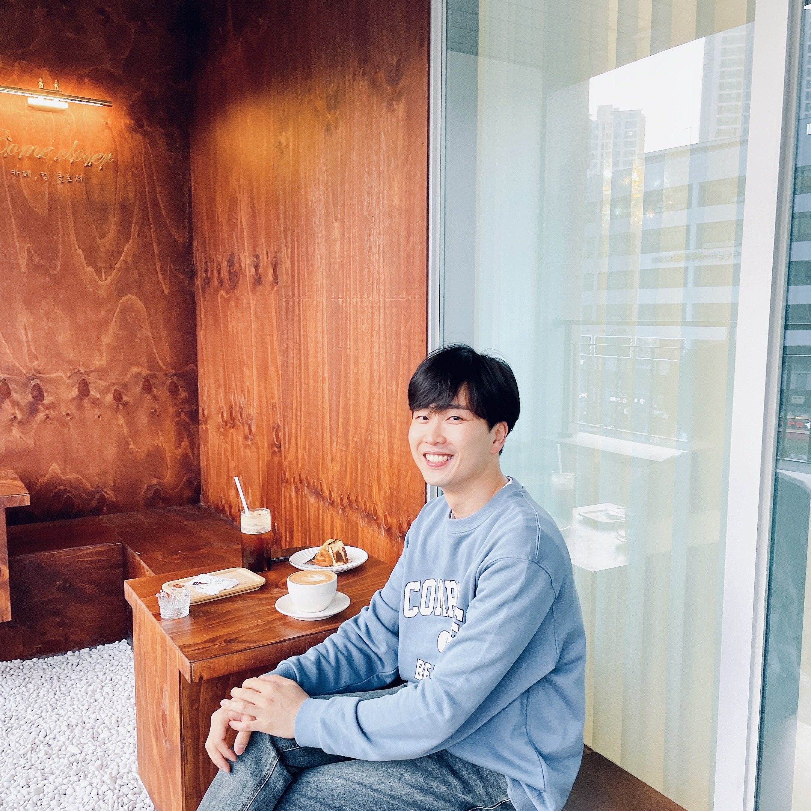
| 인생샷을 찍어달란 핑계로 너를 불러내서 두 시간 동안 너를 괴롭혔고
넌 정말 인생샷을 찍어줬지. 너를 보며 웃는표정이 내가 지을 수 있는
가장 멋진 표정이지. |
 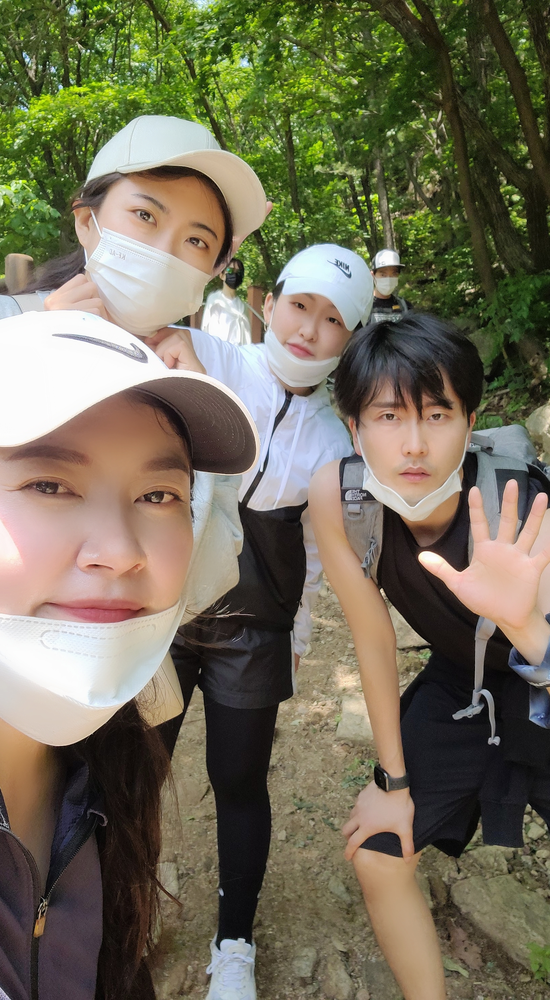
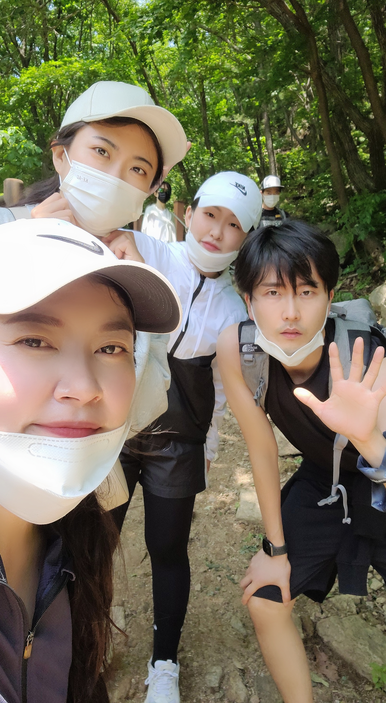
|
너에게 최대한 가까이 붙어 있으려는 소리 없이 격렬한 몸부림이 보이니?
이날 내 머릿속에는 힘들어하는 너를 붙잡고 이끌어주려는 생각으로 가득했지. |
눙물;
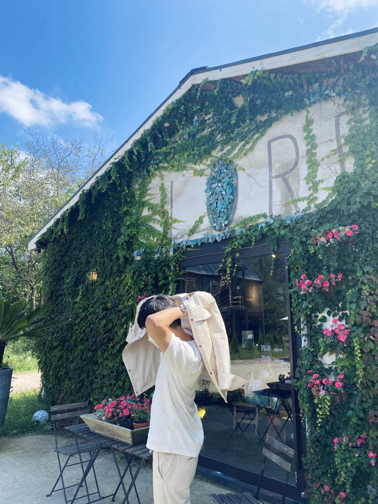 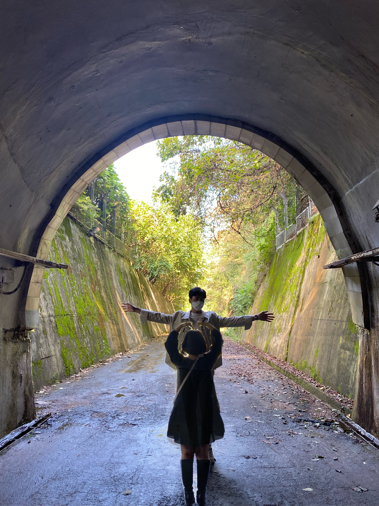
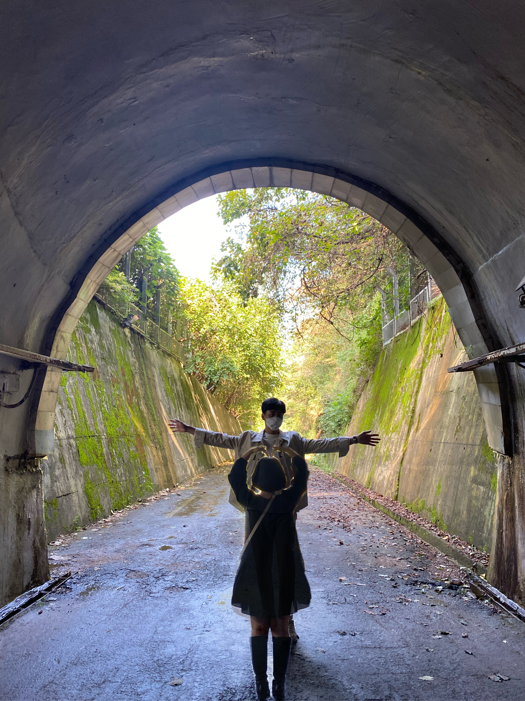
|
솔직히 장거리 운전은 싫어하는데 이날도 너에게 이끌려 가게 된 거같아.
이때도 사진은 좋은 핑계거리였고 방해꾼 세 명이서 널 괴롭힐 때 난 상당히 언짢은 상태였어.
그리고 넌 또 인생샷을 찍어줬지. |
|
너랑 약속을 잡으려면 주말에 뭐하냐고 물어 볼 수있는 큰 용기가 필요했어.
이날도 사진을 많이 찍었었지 등 뒤에는 사이즈 스티커를 붙힌채로
왜 집에가고 나서야 말해준건지는 아직도 이해 할수 없어 |
|
이날은 집에서 나서기 전부터 고백할 작정을 하고 내 마음을 설명할 대사를 줄줄 외우던 날이야.
폴콘에 먼저 도착해서 너를 기다리며 내가 준비한 말을 마음속으로 계속 반복하고 있었지.
많은 이야기를 나눈 뒤 집으로 돌아갈 때 너는 빵을 사서 내 손에 쥐여주고는 먹어보라고 말하는 모습을 보고 날 특별하게 여긴다고 생각했었어.
그렇게 월롱역으로 걸어가는 길 가운데 서서 고백하려고 타이밍을 계속 찾고 있었지만
내 입안을 하염없이 맴돌고 튀어나올듯하면 삼키고 다시 튀어나오려는 찰나에 나올 듯 말 듯 하는 그 첫 한마디
"소민아"를 난 결국 꺼내지 못했어.
나는 철로 건너편 벤치에 앉아서 폰만 바라보며 전철을 기다리는 니 모습을 보면서 내심 서운한 감정을 느꼈지만
우리가 사귀는 사이도 아닌데 너무 많은 걸 바란다고 스스로 타이르면서도
나를 한번 쳐다봐주면 손을 크게 흔들어줄 거라는 생각하고있는 날 처다봐주길 바랐지. |
|
이날이 내가 공식적으로 수세미로 불리게 된 날이지. |
|
우리 집에 과일 포크가 없는걸 알아채고 집들이 선물로 보내준 포크. 고마워. |
|
우리가 사귀기 시작하고 하는 첫 데이트. 이날은 너무 더웠고 문산역에서 소풍농월까지 땀을 뻘뻘 흘리면서 걸어갔었지 우리가 이날 가장 많이 했던 말 "아니 이게 무슨 일이야" |
|
매주 목요일은 뚝방길을 함께 걷자고 약속했던 날. 굴다리 밑에도 가보고 어디 어디 가 더 음침한지 스캔했던 날. |
|
키토김밥 싸서 반포대교 갔던 날. 이날 전철 타고 버스 타고 걷고 힘들었지만 좋은 자리 잡아서 잘 쉬다가 왔었지. 과일도 이쁘게 담아서 싸와서 감동받았고 김밥 만들 때 손발이 척척 잘 맞아서 좋았었어. 그리고 김밥이 생각보다 훨씬 맛있어서 놀랐고 날씨도 좋았고 영화 키씽부스도 재밋었고 사진도 이쁘게 나와서 좋았었지. "김밥 먹고 갈래?" |
|
커플티 입고 첫 데이트했던 날. 인생네컷 가서 어떤 모습으로 찍을지 며칠 동안 고민했었는데 너무 재밌는 사진 건졌었어. 대만족. 지씨 에피세리가서 엽사도 찍으면서 너무 많이 웃었었고 예민하네 릴스 찍어서 대박 났던 날이었지. |
|
문산 스벅 첫 방문했던 날. 이날 호캉스 계획도 짜고 서로 얼굴도 그려주다가 진심 숨넘어갈 정도로 빵 터졌었던 날이야. 자기 어렸을때 다녔던 학교 구경도 하고 동네도 구경도 하고 명문닭발이랑 계란찜 주먹밥 부셨었던 날. |
|
브런치빈에서 아몬드카노? 독특한 커피가 많았어. 이날 테라스에 못 나가서 아쉬웠었어.
역시 하트 그릴 때는 고개를 약간 틀어줘야지.
내 표정 보이지? 완전 헤벌쭉 |
 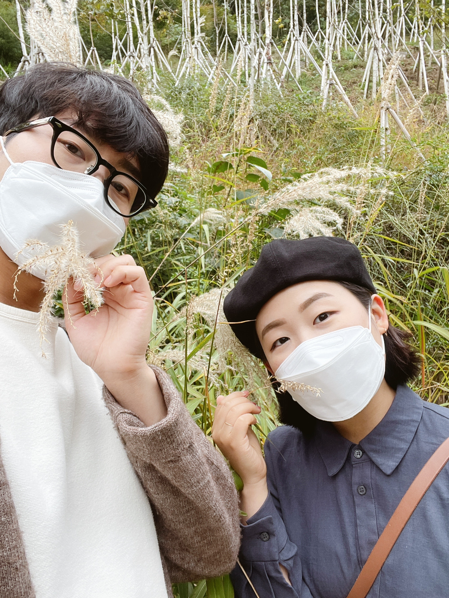
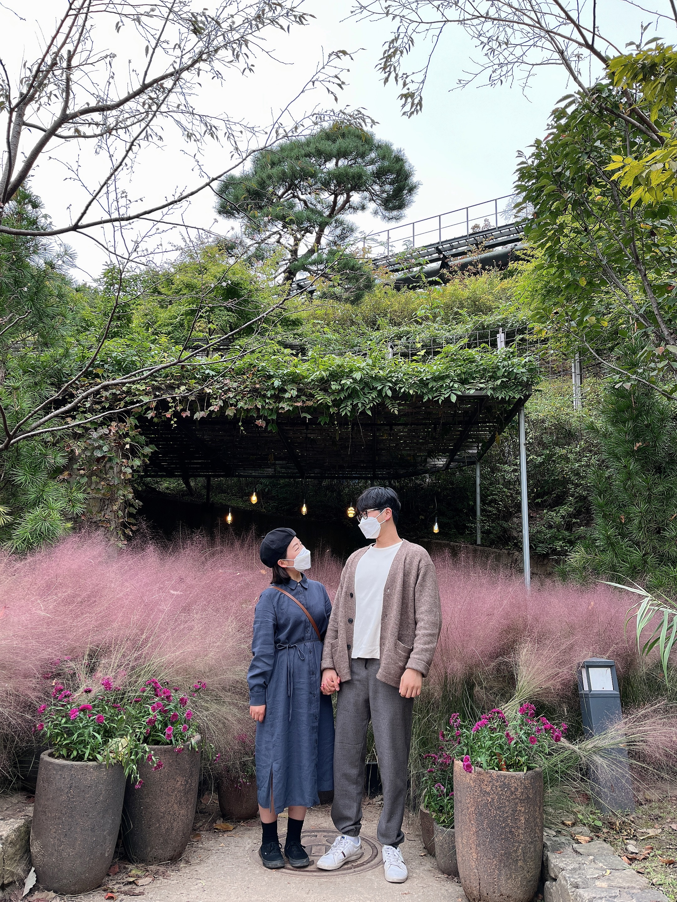
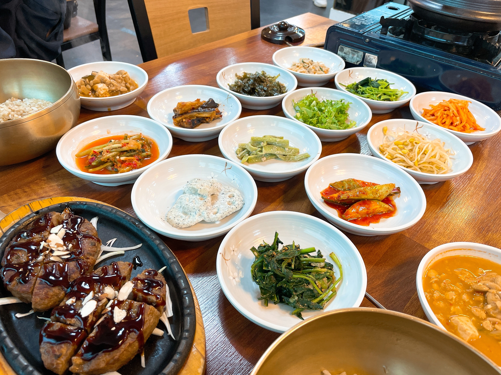
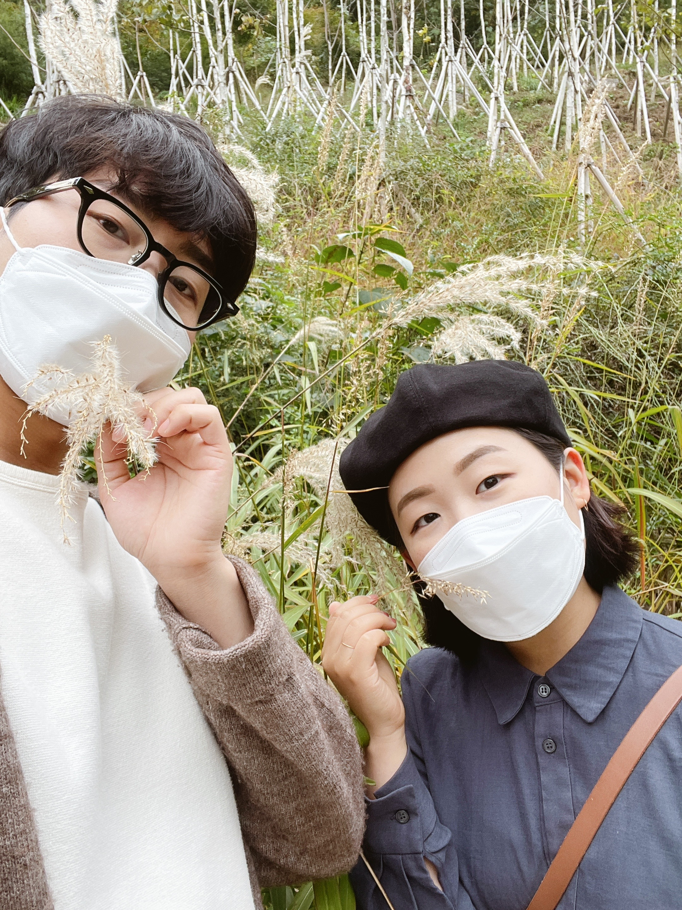
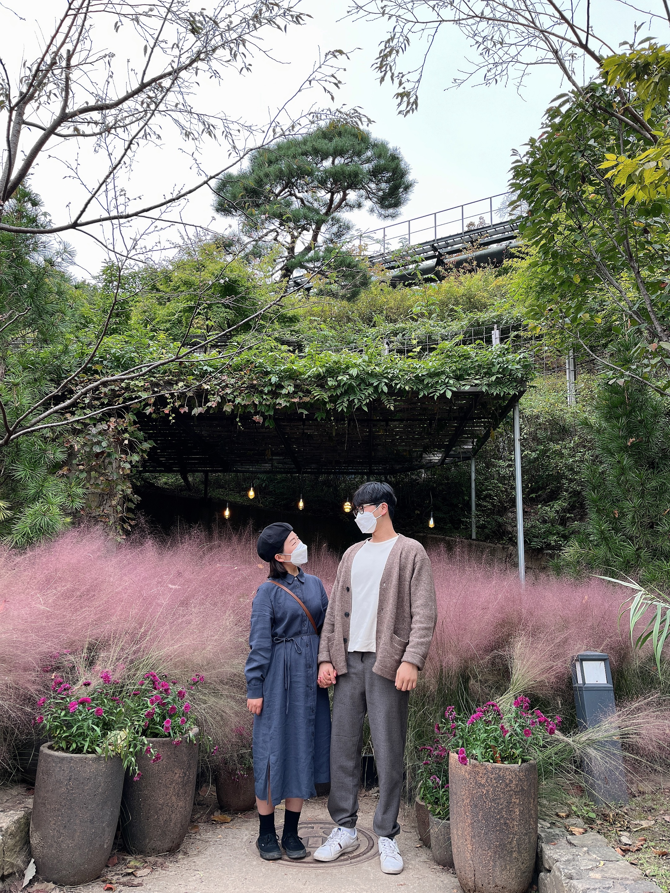
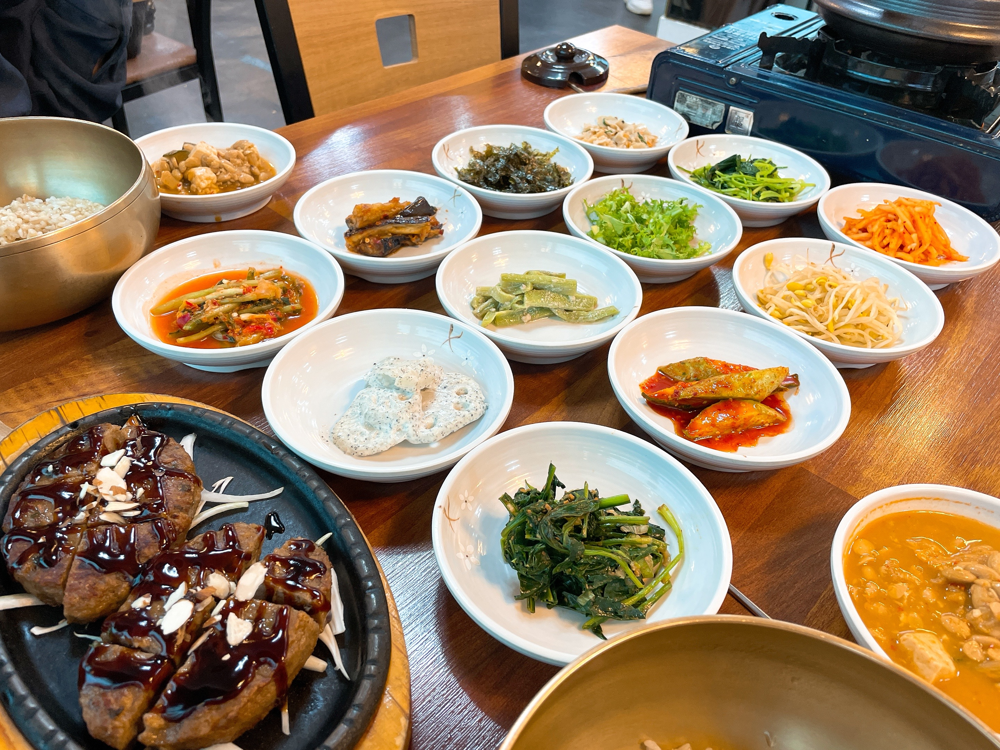
|
호캉스 갔던 날. 자기 백신 맞고 바로 가던 거라 하루 종일 신경 쓰였던 날이야.
무조건 괜찮다며 구강구조 101% 활용해서 입안을 참치김밥으로 가득 채워서 호기롭게 출발.
체크인 시간이 남아서 남대문시장을 그다지 맛있진 않던 호떡 사서 구경하다가
자기가 남긴 거까지 내가 싹 먹었는데 배불러서 힘들었었어 거의 토할 뻔.
호텔에 도착해서 방 배정받고 올라갔는데 남산타워 뷰 맘에 안든다고 방 바꿔달라고 당당하게 요청했었을 때 완전 멋있었어.
저녁에 남산타워 야경 보면서 혼자 와인 한 병 다 마시는 경이로움을 보여줬었고 진짜 불태웠었던 하루였어.
다음날 화담숲에서 추워서 꽁꽁얼어가는 손을 서로 부여잡고 구경하다가 자기 추천으로 찾아간
보리밥이랑 떡갈비집에서 너무 맛있어서 반찬 하나도 안남기고 싹싹 긁어먹었었지. 소민 뿌-듯 |


|
소스트가 가기 전에 철공소 들려서 우리 쌩목 최초 공개했던 날. 날씨도 좋고 옷도 맞춰 입어서 사진도 이쁘게 잘 나왔었고 볼링도 재밋게 쳤었어. 근데 커피 양은 적어서 아쉬웠었어. |
|
미분당에서 쌀국수 배 터지게 먹고 스파이폴도 엄청 재밋게 했던 날. |
|
용산에 카츠산도랑 오므라이스도 먹었는데 오므라이스 망한 거 들고 와서 다시 해달라고 했던 날.
옷사러 갔다가 입어보기만 엄청 입어보고 질려서 하나도 못사고 돌아왔던 날.
자라 옷 이뻤었는데 왜 못 사게 하냐고 |
|
헤이리에 이름 모를 카페에서 더블데이트했던 날. 난 이 사진이 너무 마음에 들더라. 따듯하고 행복해 보여. |
|
나도 사랑해 |
|
벨라시타 가서 옷 구경하다가 고민만 하다 결국 못 샀었고
은수테이블에서 식사하고 다시 롯백까지 가서 결국 옷 사서 왔던 날.
이날 우리 서로 엄브로 패딩에 꽂혀서 결국 크리스마스 선물로 샀잖아.
내가 입고 왔던 옷은 고스란히 쓰레기통에 버리고 왔던 날. |
 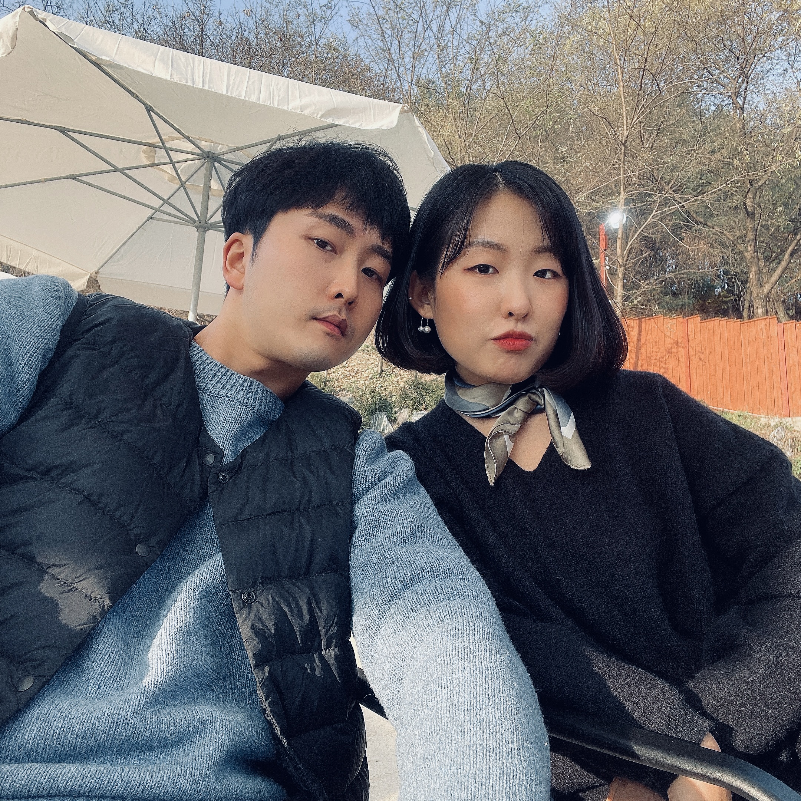
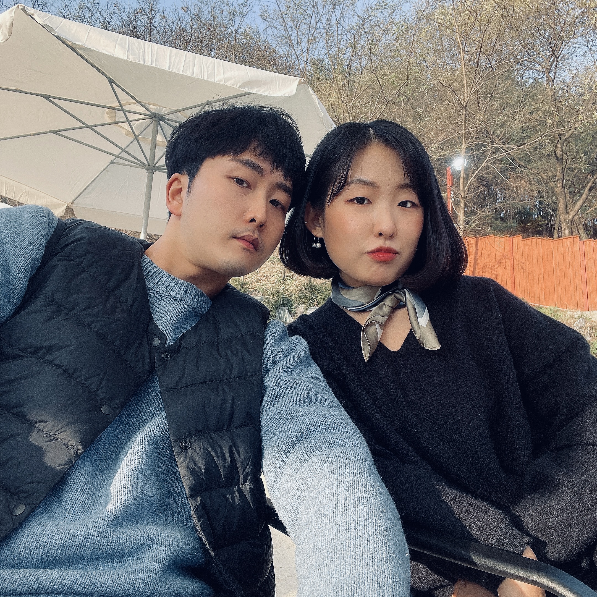
|
서로를 닮아간다는 거 이런 거 아닐까. 어떻게 너를 사랑하지 않을 수가 있겠어? |

|
임진각 캠핑장 갔던 날. 너희 가족들이랑 처음으로 같이 식사하는 자리라서 긴장 많이 했었는데 너무 다정하게 대해주셔서 고마웠었어. 저녁에 헤어져서 아쉬웠고 텐트 안이 너무 추워서 잘 수 있을까 싶었는데 이불 뒤집어쓰고 자니까 오히려 더워서 새벽에 깨서 별구경도 했었어. 같이 봤으면 더 좋았을 텐데. 조금 아쉬웠었어. 그리고 방구 낀 날. 죽고싶다. |